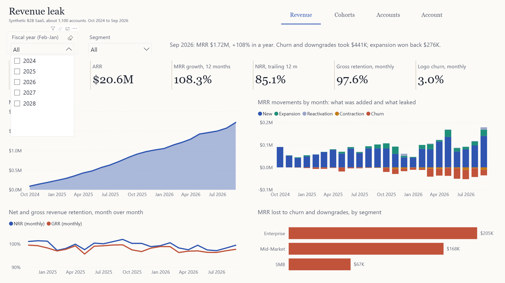
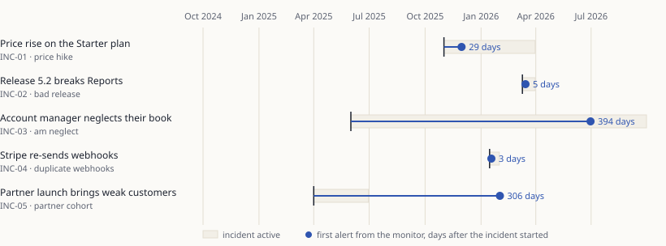
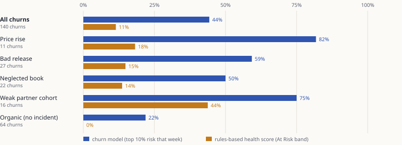
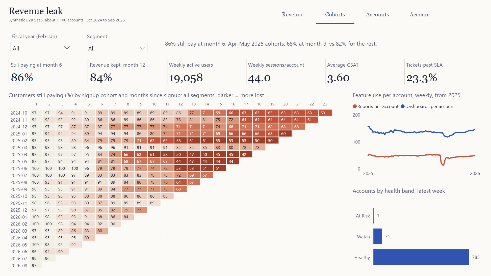
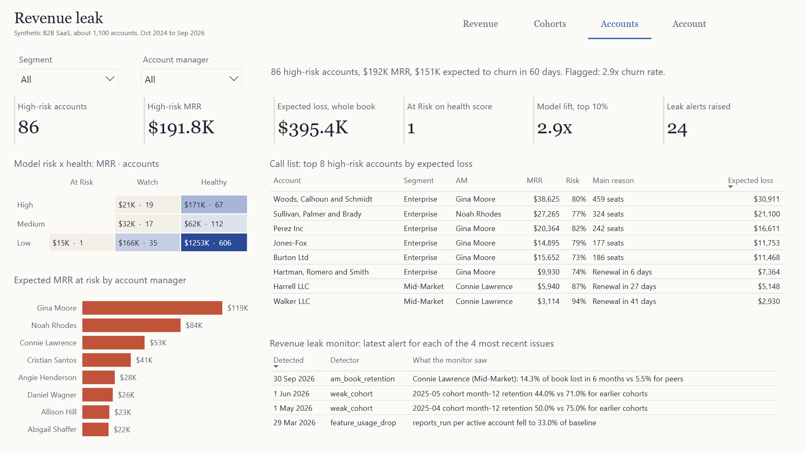
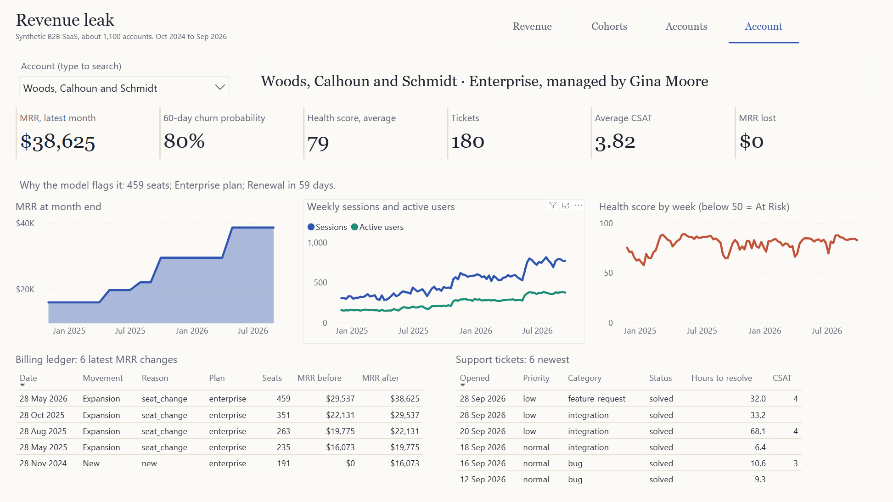

Where the revenue leaks, and how early you can see it
A B2B SaaS revenue engine built so it can be graded: five revenue leaks were planted in a simulated business and sealed away, and the warehouse, the monitor and the churn model had to find them blind.

The problem
Revenue in a subscription business rarely falls off a cliff; it leaks. A price change nudges small customers out at renewal. A broken release sends tickets up and usage down, and the cancellations arrive a month or two later. An account manager stops calling a book. A billing integration double-counts upgrades. A sales channel brings in customers who were never going to stay. Each one is visible in the data long before it is visible in the board deck, if the analytics are built to see it.
Most BI portfolio projects stop at showing MRR. The harder question is whether the analytics would actually catch a leak, and how fast. On real data that cannot be proved, because nobody knows what the true causes were. So this project starts from the other end: simulate a business with known leaks, seal the answer key, build the whole analytics stack without looking at it, then grade the result.
The business and the data
A day-by-day simulation of a B2B SaaS company over 24 months: 1,107 accounts across SMB, Mid-Market and Enterprise, three plans priced per seat, monthly and annual billing, eight account managers. Each account carries a hidden health value that drives its product use, support load, CSAT, expansion, downgrades and churn. The simulation writes the same exports a real company would have:
| Source | What it holds | Size |
|---|---|---|
| Stripe webhooks and customers | subscription created, updated, deleted; invoices paid; MRR in cents | 287 churns |
| Zendesk tickets | priority, category, first response, resolution, CSAT | 17,176 |
| Product telemetry | one row per user session with feature counts | 1.9 million |
| CRM change log | account manager, CS tier and company-size changes with effective and recorded dates | SCD2 source |
Five leaks were planted, each with a date, a scope and the signal it should leave. When an account churns, the simulation records which leak (if any) caused it. On top, 39,161 rows of real-world mess were injected across 13 kinds: duplicate events under new ids, missing account ids, timestamps in mixed time zones, out-of-range CSAT, tickets solved before they were opened, CRM changes recorded weeks late.
| Planted leak | From | What happens |
|---|---|---|
| INC-01 Starter price rise | Nov 2025 | Starter goes from $29 to $39 per seat at each account's next renewal; some small customers leave |
| INC-02 Release 5.2 | Mar 2026 | Reports breaks for three weeks for accounts that rely on it: bug tickets, usage collapse, churn later |
| INC-03 Neglected book | Jun 2025 | One Mid-Market account manager stops working their accounts; health erodes over months |
| INC-04 Duplicate webhooks | Jan 2026 | A Stripe retry bug re-sends subscription changes under new event ids |
| INC-05 Weak partner cohort | Apr-Jun 2025 | A partner launch brings in poorly qualified accounts whose use decays after onboarding |
The pipeline
Raw files land as text in DuckDB. dbt types and cleans them in staging (flagging known mess with warn-level tests rather than hiding it), removes webhook duplicates and builds daily MRR state in an intermediate layer, then publishes a Kimball star schema: a daily MRR movement ledger, daily and weekly usage, support tickets with SLAs, an SCD Type 2 customer dimension and a fiscal calendar. Every core model has an enforced contract. A metrics layer adds the MRR waterfall, NRR and GRR, cohort retention, a weekly health score and the revenue leak monitor. A churn model reads the marts and writes its scores back; the Power BI project is generated from code and reads the same tables.
Only one script, scorecard/score.py, ever opens the answer key. Everything it grades ran without it.
Proving it
- 105 dbt nodes pass on every build: models, unique and not-null keys, referential integrity to the dimensions, accepted values and ranges, SCD2 checks (no overlaps or gaps, exactly one current row), a ledger that must reconcile to subscription state, and a waterfall that must balance every month. 8 warn-level tests fire, one for each class of injected mess.
- Mutation test, 14 of 14 caught. The built warehouse is broken 14 different ways (a duplicate ledger row, overlapping SCD2 versions, a waterfall that no longer balances, a ticket pointing at a customer that does not exist...). Each break must fail a test, or the suite is not proving anything.
- 69 of 69 report numbers match. The report is opened in its own Power BI window, every measure is evaluated in Power BI's engine, and its figures are compared with independent SQL, including the top-8 call list and the per-account tables.
- Nothing truncated. Every line of text in the report (titles, cards, table cells, slicer values, under every slicer combination) is measured with the real fonts against the space it has; tables must fit without scrollbars.
- Byte-identical reruns. Two complete runs from scratch produce the same 90 output files, raw data to Power BI project.
The revenue leak monitor
Six detectors run as one dbt model. Each tests a metric against its own trailing baseline using only data available at the time, and every alert carries the first date it could actually have fired (a monthly alert only once the month has closed).

| Incident | Leak | Started | Days | Detector | What the monitor saw |
|---|---|---|---|---|---|
| INC-01 | Starter price rise | 2025-11-01 | 29 | churn_spike | 24 of 212 starter customers churned vs 4.4 expected |
| INC-02 | Release 5.2 breaks Reports | 2026-03-10 | 5 | feature_usage_drop | reports_run per active account fell to 42.0% of baseline |
| INC-03 | Neglected account-manager book | 2025-06-01 | 394 | am_book_retention | Connie Lawrence (Mid-Market): 12.4% of book lost in 6 months vs 5.5% for peers |
| INC-04 | Stripe re-sends webhooks | 2026-01-15 | 3 | duplicate_billing | 3 duplicate subscription events removed |
| INC-05 | Weak partner cohort | 2025-04-01 | 306 | weak_cohort | 2025-04 cohort month-9 retention 63.0% vs 84.0% for earlier cohorts |
3 alerts matched no planted leak (false alarms). 1 more matched none of the matching rules but, looking up the true causes behind them, were mostly incident-driven churn: real downstream signals, counted separately rather than as wins.
One revision, checked on unseen worlds
The first, blind version of the monitor used ad-hoc thresholds ("twice the average", "mean plus three standard deviations of eight weeks"). On seed 42 it found 4 of 5 leaks with 10 false alarms. Reading the false alarms showed the thresholds firing on small counts, and the cohort detector checking too few milestones to see the weak cohort. Version 2 replaced the thresholds with Poisson, binomial and two-proportion tests and checked cohorts at months 3, 6, 9 and 12. Because v2 was written after seeing seed 42, both versions were rerun on three simulated worlds nobody had looked at (full notes):
v1, ad-hoc thresholds
| Seed | INC-01 | INC-02 | INC-03 | INC-04 | INC-05 | False alarms |
|---|---|---|---|---|---|---|
| 42 | 29d | 5d | 394d | 3d | missed | 10 |
| 7 | 29d | 5d | missed | 3d | 244d | 10 |
| 2024 | 29d | 5d | 303d | 3d | 214d | 14 |
| 31337 | 29d | 5d | missed | 3d | 244d | 13 |
v2, statistical tests
| Seed | INC-01 | INC-02 | INC-03 | INC-04 | INC-05 | False alarms |
|---|---|---|---|---|---|---|
| 42 | 29d | 5d | 394d | 3d | 306d | 3 |
| 7 | 29d | 5d | missed | 3d | 365d | 1 |
| 2024 | 29d | 5d | 244d | 3d | 214d | 6 |
| 31337 | 29d | 5d | 152d | 3d | 306d | 8 |
Days from the start of each incident to its first matching alert. The price rise, the broken release and the duplicate webhooks are caught within a month in every world. The neglected book is the hardest: the account-manager test needs months of book history before it has the power to fire.
Data quality: what the tests caught
| Injected problem | Injected | Flagged | Handled by |
|---|---|---|---|
| Stripe webhooks re-sent under new ids (INC-04) | 15 | 15 | removed in int_subscription_events |
| Stripe events delivered twice, same id | 51 | 51 | deduplicated in staging |
| Plan ids with stray casing or spaces | 288 | 288 | lower/trim in staging |
| Stripe customers without an account id | 20 | 20 | matched on email domain |
| Tickets without an account | 99 | 99 | kept, mapped to unknown member -1 |
| Ticket times in IST instead of UTC | 380 | 380 | converted to UTC |
| Tickets solved before they were opened | 34 | 34 | resolution nulled and flagged |
| CSAT scores outside 1-5 | 33 | 33 | CSAT nulled and flagged |
| Ticket priorities with stray casing | 846 | 846 | lower/trim in staging |
| Sessions with no end time | 18,806 | 18,774 | duration nulled |
| Sessions ending before they start | 3,703 | 3,703 | duration nulled |
| Sessions logged twice | 14,839 | 14,839 | deduplicated in staging |
| CRM changes recorded 30+ days late | 47 | 47 | SCD2 uses effective date |
Flagged can sit just below injected where two problems land on the same row (a session duplicated and also missing its end time is counted once).
The churn model
One row per paying account per week, built only from what was known that week: 30-day usage velocity, seat adoption, days since last session, tickets against the account's own baseline, high-priority and bug tickets, SLA breaches, CSAT level and trend, seat changes, a recent price rise, downgrades, days to renewal, and the account's segment, plan, channel and manager. The label: does the account cancel in the next 60 days. The model trains on weeks up to December 2025 and is tested on March to August 2026, out of time and straight through a broken release it never saw.
| Out-of-time test, Mar-Aug 2026 | logistic regression (chosen) | XGBoost |
|---|---|---|
| ROC AUC | 0.73 | 0.71 |
| Precision-recall AUC (base rate 6.6%) | 0.19 | 0.14 |
| Churn rate in the riskiest 10% | 19.4% (2.9x) | |
| Share of all churners inside that 10% | 29% |

The split by true cause is the useful part. Churn caused by a leak leaves a trail (falling usage, ticket spikes, a recent price rise) and the model picks most of it up. Organic churn, where a healthy-looking account simply leaves at renewal, is caught far less often (22%): there is little to see. The rules-based health score, with weights fixed by hand, catches much less than the model; it stays in the report because a CS team can read it, and the gap is shown rather than hidden. The strongest features are days to renewal, seat count, seat adoption, annual billing, monthly billing.
The report
Four pages, generated as a Power BI project (TMDL model, PBIR report) from powerbi/build_pbip.py: Revenue for the board view, Cohorts for retention and adoption, Accounts for the customer-success team, and Account to look at one customer in depth.

What the data says
Over the 24 months, churn and downgrades took $441K of MRR while expansion added $276K; gross revenue retention averaged 97.4% a month in the last year and logo churn 3.5%.


Built as code
- One command,
python pipeline.py, runs everything: simulation, dbt build and tests, model, exports, Power BI project, scorecard. CI runs it on every push, plus the mutation test. - The Power BI report is generated: every page, visual and measure. Column types come from the same queries that write its data.
- This case study is rendered from the warehouse by
docs/render_docs.py; it fails if any figure is missing.
Limits and next steps
- The data is simulated. The scores measure how well the analytics find what was planted, not how a real business behaves. The answer key is only possible because of that.
- Incident dates are fixed across seeds; a stronger test would also randomise when and where the leaks happen.
- The account-manager detector finds a neglected book months late; a test that pools evidence over time (CUSUM) would likely find it sooner.
- The health score's weights are hand-set and weak. Calibrating it against the model's drivers, while keeping it readable, is the obvious next step.